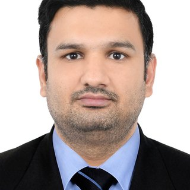

Press kit
Everything an editor, podcast host or event organiser needs. The photo and the bios may be used as they are in connection with coverage, panels and listings. Please spell the name Khaqan Shaheen.
Headshot

Download the full headshot (JPG, portrait)
{kind=link}
Download the square crop (JPG, 800 by 800)
{kind=link}
Credit is not required.
Bios
Short (about 50 words)
Khaqan Shaheen is Head of IT for a manufacturing group in the UAE, running one ERP and the technology behind it across six sites in five countries. He has put five AI systems into daily production use, from document OCR to a voice agent on the company telephony. He is based in Dubai.
Medium (about 100 words)
Khaqan Shaheen is Head of IT for a plastics manufacturing group in the UAE, where he owns the entire technology function for six sites in five countries and reports directly to the owner. He implemented the single Odoo ERP every site now closes its month on, and directs the custom development built on top of it, including machine scheduling with overlap prevention. Five AI systems he introduced run in daily production: document OCR into the ERP, automated document verification, a 24 hour sales agent on WhatsApp and the web, an AI voice agent on the corporate telephony, and one chat platform for every channel. He has worked in web and business systems since 2008 and lives in Dubai.
Long (about 200 words)
Khaqan Shaheen is Head of IT for a plastics manufacturing group in the UAE. He owns the entire technology function for six sites in five countries and around 150 users, leads a team of six alongside outsourced developers, and reports directly to the owner. Whenever the group opens a new factory, he builds its IT from nothing.
His central piece of work is one Odoo ERP for the whole group, covering production, sales, inventory, procurement, accounting, HR and maintenance. He implemented it and directs every extension built on it. Rather than buy a second system for manufacturing, he had the modules the standard package did not reach built to his specification, so every site works from the same records.
He is best known for putting AI to work in production rather than in pilots. Five systems run in daily use: document OCR that reads supplier bills and expense claims into the ERP, automated certificate and document verification, a 24 hour sales agent on WhatsApp and the web, an AI voice agent on the corporate Grandstream telephony, and a single chat platform running several WhatsApp numbers and the group websites.
On the infrastructure side he took the production database from PostgreSQL 9.5 to 16 with no unplanned downtime at any site, and replaced locally held passwords with Google Workspace single sign on, two factor authentication and role based access. He has worked in web and business systems since 2008, holds a Bachelor of Arts from the University of the Punjab, and lives in Dubai.
Fact sheet
- Name: Khaqan Shaheen (given name Khaqan, family name Shaheen)
- Role: Head of IT, plastics manufacturing group, UAE. December 2015 to present.
- Location: Dubai, United Arab Emirates
- Scope: six sites, five countries, around 150 users, team of six plus outsourced developers, reports directly to the owner
- Platform: one Odoo ERP instance for the whole group, on PostgreSQL 16, Linux and Nginx, on-premise and across AWS, Google Cloud and DigitalOcean
- AI in production: document OCR, automated document verification, a WhatsApp and web sales agent, a voice agent on Grandstream telephony, a single multi-channel chat platform
- Working since: 2008, first as a web designer in Lahore, then in Abu Dhabi from 2009 and Dubai from 2015
- Education: Bachelor of Arts, University of the Punjab, Lahore, 2009
- Languages: English, Urdu
- Open source: ai-visibility-audit, a zero-dependency tool that checks whether AI search engines can crawl, read and cite a website
Topics
- Running one ERP across a multi-country manufacturing group
- AI systems that survive contact with daily operations
- What an AI agent gets wrong when nobody is watching it
- Database migrations nobody notices
- Identity and access for a mid-sized group without an enterprise budget
- Building the IT for a new factory from nothing
- Whether a website is visible to ChatGPT, Perplexity and Google AI Overviews
- Running IT for the Gulf and South Asia from Dubai
Contact
Email khaqanshaheen@yahoo.com or message on LinkedIn. Dubai time (GMT+4).